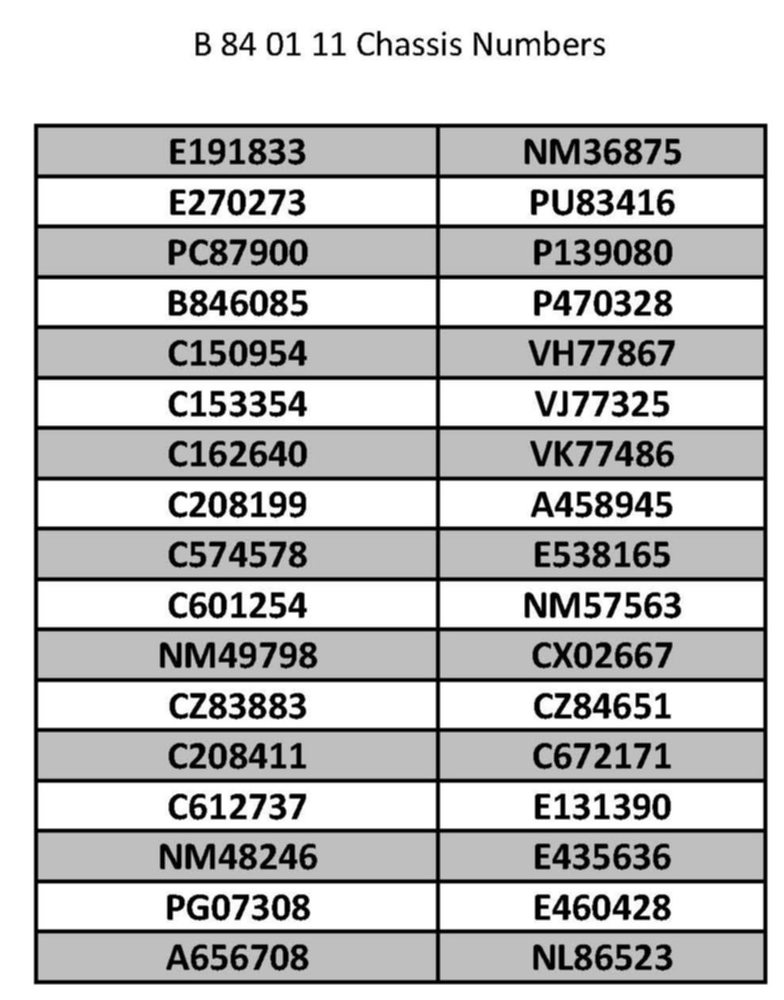
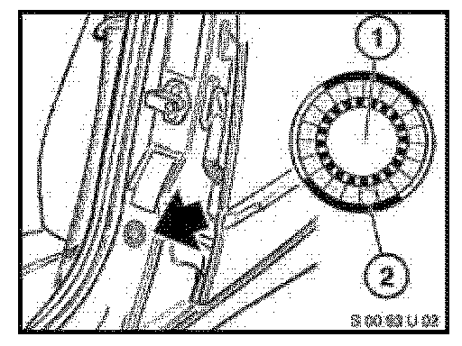
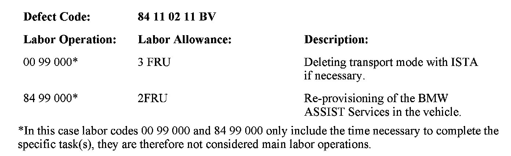

Campaign - BMW ASSIST(R) Vehicle Incorrectly Provisioned
SI B84 01 11Communication Systems
February 2011
Technical Service
SUBJECT
Service Action: BMW ASSIST Vehicles Are Not Correctly Provisioned
MODEL
Vehicles according to the VIN shown below.
SITUATION
Due to incorrect provisioning data, the vehicles must be manually re-provisioned.
CAUSE
Incorrect provisioning data in the TCU
Vehicles still in transport mode or parked out of GSM reception, preventing automatic reprovisioning over the air
PROCEDURE

^ Check the VIN list shown above of affected vehicles.
^ If in transport mode, take the vehicle out of transport mode with ISTA.
^ Move the vehicle into an area of GSM reception, if necessary.
^ In the vehicle, go to the "BMW ASSIST" menu, select "Service Status", and then select "Update Services".
LABEL INSTRUCTIONS
This Service Action has been assigned code number 588. After the vehicle has been checked and/or corrected, obtain a label (SD 92-395) and:
A. Emboss your BMW center warranty number in the middle of the label (1);
B. Punch out code number 588 (2), printed on the label; and

C. Affix the label to the B-pillar as shown.
If the vehicle already has a label from a previous Service Action/Recall Campaign, affix the new label next to the old one. Do not affix one label on top of another one, because a number from an underlying label could appear in the punched-out hole of the new label.

WARRANTY INFORMATION
Covered under the terms of the BMW New Vehicle/SAV Limited Warranty as applicable.